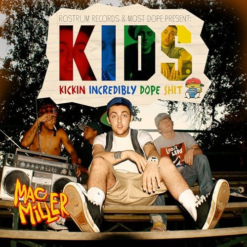
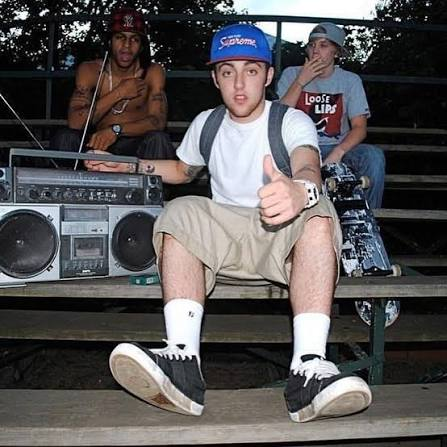
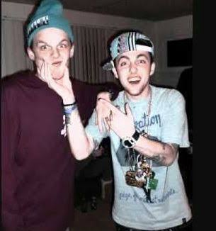

Released: August 13, 2010
Label: Rostrum Records
Producer: ID Labs, Mac Miller, Big Jerm, E. Dan, SAP, Clams Casino

Age at Release: Mac was just 18 years old and had recently graduated from Taylor Allderdice High School in Pittsburgh.
The mixtape was named after and heavily inspired by Larry Clark's 1995 film KIDS. Dialogue snippets from characters like Telly and Casper are sampled throughout the project.

Because it was originally a free DatPiff mixtape, clears for samples were never secured in 2010. Lord Finesse even sued Rostrum/Mac over the sample used on "Kool Aid & Frozen Pizza". Due to sample clearance issues, the tape didn't land on official streaming platforms until 2020, missing tracks like "Traffic in the Sky" and "La La La La" on initial digital releases.